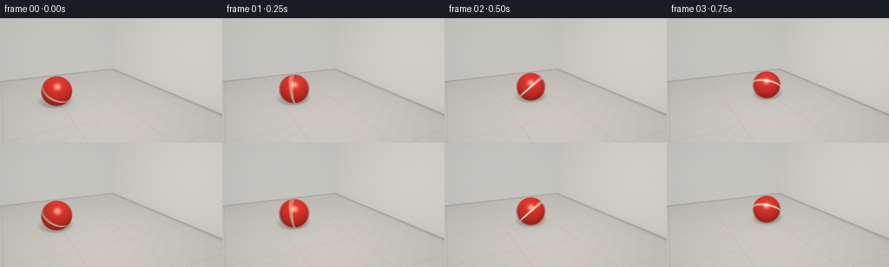
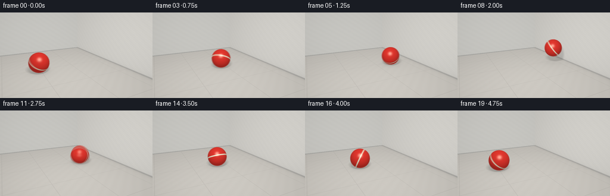
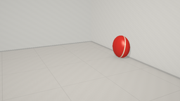

CODING AGENTS AS PIXEL WORLD MODELS
traex/GPT-6.1-Sol · mechanics_0039
点击播放 · 原生 RGB 像素
逐轮保存的候选
回放视频、检查图与代码变化。
每份候选均可单独播放。实际图片检查记录在下方工具轨迹中。
候选 01播放与检查图
点击播放 · 原生 RGB 像素


展开代码变化
--- 上一保存版本
+++ 本次保存版本
@@ -0,0 +1,203 @@
+"""Procedural RGB animation of a rubber ball meeting a wall.
+Only numpy and Pillow are used; camera rays and primitive shading are analytic.
+"""
+from pathlib import Path
+import json
+import numpy as np
+from PIL import Image
+import artifact_io
+
+ROOT = Path(__file__).resolve().parent
+SPEC = json.loads((ROOT / 'task_spec.json').read_text())
+W, H = SPEC['width'], SPEC['height']
+SS = 3
+w, h = W * SS, H * SS
+rng = np.random.default_rng(31)
+
+def norm(v):
+ return v / np.maximum(np.linalg.norm(v, axis=-1, keepdims=True), 1e-9)
+
+cam = np.array([-5.3, 4.15, 10.3])
+target = np.array([0.0, .85, 0.0])
+forward = norm(target-cam)
+right = norm(np.cross(forward, [0,1,0]))
+up = np.cross(right, forward)
+focal = h/(2*np.tan(np.deg2rad(34)/2))
+px, py = np.meshgrid(np.arange(w)+.5, np.arange(h)+.5)
+rays = norm(forward + (px-w/2)[...,None]/focal*right - (py-h/2)[...,None]/focal*up)
+
+# Room: pale stone floor, a solid plaster wall at the right, rear wall beyond.
+tfloor = -cam[1]/rays[...,1]
+twall = (3.15-cam[0])/rays[...,0]
+trear = (-5.8-cam[2])/rays[...,2]
+for t in (tfloor,twall,trear):
+ t[t<=0] = 1e8
+stack = np.stack([tfloor,twall,trear],-1)
+kind = np.argmin(stack,axis=-1)
+tbg = np.min(stack,axis=-1)
+points = cam + rays*tbg[...,None]
+normals = np.zeros_like(points)
+normals[kind==0] = [0,1,0]
+normals[kind==1] = [-1,0,0]
+normals[kind==2] = [0,0,1]
+light = np.array([-3.5,7.0,5.5])
+ld = norm(light-points)
+nd = np.maximum(0,(ld*normals).sum(-1))
+
+# Smooth spatial grain is fixed in world coordinates.
+x,y,z = points[...,0],points[...,1],points[...,2]
+noise = (np.sin(x*49+z*72+y*61)*np.sin(z*53-x*38+y*21)*.009
+ + np.sin(x*7.3+z*8.9+y*11.3)*.005)
+albedo = np.zeros_like(points)
+floor = kind==0
+wall = kind==1
+rear = kind==2
+albedo[floor] = [.61,.585,.54]
+albedo[wall] = [.69,.675,.635]
+albedo[rear] = [.57,.565,.535]
+albedo += noise[...,None]
+# Restrained stone panel joints give speed and scale without crowding the scene.
+dx = np.abs((x+.4+1.35)%2.7-1.35)
+dz = np.abs((z+.2+1.5)%3.0-1.5)
+join = np.exp(-(np.minimum(dx,dz)/.014)**2)*floor
+albedo *= (1-.15*join)[...,None]
+# Slim darker skirting on the vertical wall establishes a readable collision edge.
+baseboard = (kind!=0)&(y<.105)
+albedo[baseboard] *= .71
+albedo += ((kind!=0)&(np.abs(y-.108)<.008))[...,None]*.038
+# Wall/floor contact occlusion, stable ambient lighting.
+corner = np.ones((h,w))
+corner[floor] -= .12*np.exp(-(3.15-x[floor])/.18)
+corner[wall] -= .12*np.exp(-y[wall]/.15)
+base_light = (.59+.47*nd)*corner
+
+# Deterministic broad window-like area source.
+light_samples = []
+for a,b in [(-.8,-.5),(0,-.5),(.8,-.5),(-.8,0),(0,0),(.8,0),(-.8,.5),(0,.5),(.8,.5)]:
+ light_samples.append(light+np.array([a,0,b]))
+
+R = .76
+hit_time = 1.75
+wall_x=3.15
+contact_x=wall_x-R
+start=-3.25
+
+def motion(t):
+ if t < hit_time:
+ x = start+(contact_x-start)*t/hit_time
+ height=R
+ scales=np.array([R,R,R])
+ elif abs(t-hit_time)<1e-8:
+ scales=np.array([R*.72,R*1.16,R*1.10])
+ x=wall_x-scales[0]
+ height=scales[1]
+ else:
+ tau=t-hit_time
+ x=contact_x-2.35*tau+.18*tau*tau
+ # A wall rebound throws the elastic ball up; subsequent floor rebounds decay.
+ if tau <= 1.0:
+ lift=3.2*tau*(1-tau)
+ elif tau <= 1.7:
+ q=tau-1.0
+ lift=2.2*q*(.7-q)
+ elif tau <= 2.2:
+ q=tau-1.7
+ lift=1.6*q*(.5-q)
+ else:
+ lift=0
+ height=R+max(0,lift)
+ scales=np.array([R,R,R])
+ # The first floor impact squashes the rubber too.
+ if abs(tau-1.0)<.001:
+ scales=np.array([R*1.1,R*.84,R*1.09])
+ height=scales[1]
+ return np.array([x,height,.25]),scales
+
+def ellipsoid_hit(orig, dirs, center, scales):
+ oo=(orig-center)/scales
+ dd=dirs/scales
+ a=np.sum(dd*dd,axis=-1)
+ b=np.sum(oo*dd,axis=-1)
+ c=np.sum(oo*oo,axis=-1)-1
+ disc=b*b-a*c
+ root=(-b-np.sqrt(np.maximum(disc,0)))/a
+ return root, (disc>=0)&(root>1e-5)
+
+def frame_at(t):
+ center,scales=motion(t)
+ shadow=np.zeros((h,w))
+ for ls in light_samples:
+ delta=ls-points
+ distance=np.linalg.norm(delta,axis=-1)
+ dirs=delta/distance[...,None]
+ st,ok=ellipsoid_hit(points+normals*.001,dirs,center,scales)
+ shadow += ok&(st<distance)
+ shadow /= len(light_samples)
+ lit=base_light-.37*nd*shadow
+ # Near-contact ambient shadow under the ball, kept soft and attached to the floor.
+ rad2=(x-center[0])**2+(z-center[2])**2
+ gap=max(0,center[1]-scales[1])
+ ao=np.exp(-rad2/(.45+gap*.45))*np.exp(-gap*1.8)*floor
+ lit*=1-.18*ao
+ rgb=albedo*lit[...,None]
+
+ tb,ok=ellipsoid_hit(cam,rays,center,scales)
+ mask=ok&(tb<tbg)
+ p=cam+rays*tb[...,None]
+ local=(p-center)/scales
+ normal=norm((p-center)/(scales*scales))
+ ball_ld=norm(light-p)
+ diffuse=np.maximum(0,(normal*ball_ld).sum(-1))
+ eye=-rays
+ half=norm(ball_ld+eye)
+ specular=np.maximum(0,(normal*half).sum(-1))**55
+ angle=-(center[0]-start)/R
+ ca,sa=np.cos(angle),np.sin(angle)
+ # Texture rotates around the rolling axis rather than sliding over the surface.
+ u=ca*local[...,0]+sa*local[...,1]
+ v=-sa*local[...,0]+ca*local[...,1]
+ zz=local[...,2]
+ tex=.018*np.sin(u*103+zz*53)*np.sin(v*119-u*19)
+ color=np.empty_like(rgb)
+ color[:]=[.78,.038,.027]
+ color+=tex[...,None]*np.array([1,.25,.18])
+ # A thin ivory great-circle stripe makes its fast rolling rotation unmistakable.
+ stripe_coord=.82*v+.36*u+.44*zz
+ band=np.abs(stripe_coord)
+ stripe=np.clip((.067-band)/.012,0,1)
+ ivory=np.array([.89,.81,.61])
+ color=color*(1-stripe[...,None])+ivory*stripe[...,None]
+ # Fine molded seam circling the rubber skin.
+ seam=np.exp(-((zz-.05)/.013)**2)
+ color*= (1-.28*seam)[...,None]
+ shade=.34+.65*diffuse
+ # Reflected warm floor light on the lower hemisphere.
+ bounce=np.maximum(0,-normal[...,1])*.09
+ ball=color*(shade+bounce)[...,None]+specular[...,None]*np.array([.48,.39,.30])
+ fresnel=(1-np.maximum(0,(normal*eye).sum(-1)))**4
+ ball+=fresnel[...,None]*np.array([.045,.03,.023])
+ rgb[mask]=ball[mask]
+ # Gentle photographic vignette and sRGB encoding.
+ vignette=1-.075*((px-w/2)**2/(w/2)**2+(py-h/2)**2/(h/2)**2)
+ rgb*=vignette[...,None]
+ rgb=np.clip(rgb,0,1)
+ srgb=np.where(rgb<=.0031308,12.92*rgb,1.055*rgb**(1/2.4)-.055)
+ return srgb
+
+def main():
+ frames=[]
+ for i in range(SPEC['frames']):
+ t=i/SPEC['fps']
+ # Slight exposure-time blur only during rapid motion; contact remains readable.
+ if i==7:
+ image=frame_at(t)
+ else:
+ image=sum(frame_at(max(0,t+offset)) for offset in [-.014,0,.014])/3
+ im=Image.fromarray(np.uint8(np.clip(image*255+.5,0,255)))
+ im=im.resize((W,H),Image.Resampling.LANCZOS)
+ frames.append(np.asarray(im))
+ print('Rendered frame',i,flush=True)
+ artifact_io.save(np.stack(frames),ROOT)
+
+if __name__=='__main__':
+ main()
可观测工具轨迹
实际执行的命令与返回图片。
命令 1exit 0
/bin/bash -lc 'ls -la && cat prompt.txt && cat GENERATION_RULES.md && cat task_spec.json'
命令 2exit 0
/bin/bash -lc 'cat artifact_io.py'
命令 3exit 0
/bin/bash -lc "python - <<'PY' import importlib.util for m in ['numpy','PIL']: print(m, bool(importlib.util.find_spec(m))) PY"
命令 4exit 0
/bin/bash -lc "cat > generate.py <<'PY'
\"\"\"Procedural RGB animation of a rubber ball meeting a wall.
Only numpy and Pillow are used; camera rays and primitive shading are analytic.
\"\"\"
from pathlib import Path
import json
import numpy as np
from PIL import Image
import artifact_io
ROOT = Path(__file__).resolve().parent
SPEC = json.loads((ROOT / 'task_spec.json').read_text())
W, H = SPEC['width'], SPEC['height']
SS = 3
w, h = W * SS, H * SS
rng = np.random.default_rng(31)
def norm(v):
return v / np.maximum(np.linalg.norm(v, axis=-1, keepdims=True), 1e-9)
cam = np.array([-5.3, 4.15, 10.3])
target = np.array([0.0, .85, 0.0])
forward = norm(target-cam)
right = norm(np.cross(forward, [0,1,0]))
up = np.cross(right, forward)
focal = h/(2*np.tan(np.deg2rad(34)/2))
px, py = np.meshgrid(np.arange(w)+.5, np.arange(h)+.5)
rays = norm(forward + (px-w/2)[...,None]/focal*right - (py-h/2)[...,None]/focal*up)
# Room: pale stone floor, a solid plaster wall at the right, rear wall beyond.
tfloor = -cam[1]/rays[...,1]
twall = (3.15-cam[0])/rays[...,0]
trear = (-5.8-cam[2])/rays[...,2]
for t in (tfloor,twall,trear):
t[t<=0] = 1e8
stack = np.stack([tfloor,twall,trear],-1)
kind = np.argmin(stack,axis=-1)
tbg = np.min(stack,axis=-1)
points = cam + rays*tbg[...,None]
normals = np.zeros_like(points)
normals[kind==0] = [0,1,0]
normals[kind==1] = [-1,0,0]
normals[kind==2] = [0,0,1]
light = np.array([-3.5,7.0,5.5])
ld = norm(light-points)
nd = np.maximum(0,(ld*normals).sum(-1))
# Smooth spatial grain is fixed in world coordinates.
x,y,z = points[...,0],points[...,1],points[...,2]
noise = (np.sin(x*49+z*72+y*61)*np.sin(z*53-x*38+y*21)*.009
+ np.sin(x*7.3+z*8.9+y*11.3)*.005)
albedo = np.zeros_like(points)
floor = kind==0
wall = kind==1
rear = kind==2
albedo[floor] = [.61,.585,.54]
albedo[wall] = [.69,.675,.635]
albedo[rear] = [.57,.565,.535]
albedo += noise[...,None]
# Restrained stone panel joints give speed and scale without crowding the scene.
dx = np.abs((x+.4+1.35)%2.7-1.35)
dz = np.abs((z+.2+1.5)%3.0-1.5)
join = np.exp(-(np.minimum(dx,dz)/.014)**2)*floor
albedo *= (1-.15*join)[...,None]
# Slim darker skirting on the vertical wall establishes a readable collision edge.
baseboard = (kind"'!=0)&(y<.105)
albedo[baseboard] *= .71
albedo += ((kind!=0)&(np.abs(y-.108)<.008))[...,None]*.038
# Wall/floor contact occlusion, stable ambient lighting.
corner = np.ones((h,w))
corner[floor] -= .12*np.exp(-(3.15-x[floor])/.18)
corner[wall] -= .12*np.exp(-y[wall]/.15)
base_light = (.59+.47*nd)*corner
# Deterministic broad window-like area source.
light_samples = []
for a,b in [(-.8,-.5),(0,-.5),(.8,-.5),(-.8,0),(0,0),(.8,0),(-.8,.5),(0,.5),(.8,.5)]:
light_samples.append(light+np.array([a,0,b]))
R = .76
hit_time = 1.75
wall_x=3.15
contact_x=wall_x-R
start=-3.25
def motion(t):
if t < hit_time:
x = start+(contact_x-start)*t/hit_time
height=R
scales=np.array([R,R,R])
elif abs(t-hit_time)<1e-8:
scales=np.array([R*.72,R*1.16,R*1.10])
x=wall_x-scales[0]
height=scales[1]
else:
tau=t-hit_time
x=contact_x-2.35*tau+.18*tau*tau
# A wall rebound throws the elastic ball up; subsequent floor rebounds decay.
if tau <= 1.0:
lift=3.2*tau*(1-tau)
elif tau <= 1.7:
q=tau-1.0
lift=2.2*q*(.7-q)
elif tau <= 2.2:
q=tau-1.7
lift=1.6*q*(.5-q)
else:
lift=0
height=R+max(0,lift)
scales=np.array([R,R,R])
# The first floor impact squashes the rubber too.
if abs(tau-1.0)<.001:
scales=np.array([R*1.1,R*.84,R*1.09])
height=scales[1]
return np.array([x,height,.25]),scales
def ellipsoid_hit(orig, dirs, center, scales):
oo=(orig-center)/scales
dd=dirs/scales
a=np.sum(dd*dd,axis=-1)
b=np.sum(oo*dd,axis=-1)
c=np.sum(oo*oo,axis=-1)-1
disc=b*b-a*c
root=(-b-np.sqrt(np.maximum(disc,0)))/a
return root, (disc>=0)&(root>1e-5)
def frame_at(t):
center,scales=motion(t)
shadow=np.zeros((h,w))
for ls in light_samples:
delta=ls-points
distance=np.linalg.norm(delta,axis=-1)
dirs=delta/distance[...,None]
st,ok=ellipsoid_hit(points+normals*.001,dirs,center,scales)
shadow += ok&(st<distance)
shadow /= len(light_samples)
lit=base_light-.37*nd*shadow
# Near-contact ambient shadow under the ball, kept soft and attached to the floor.
rad2=(x-center[0])**2+(z-center[2])**2
gap=max(0,center[1]-scales[1])
ao=np.exp(-rad2/(.45+gap*.45))*np.exp(-gap*1.8)*floor
lit*=1-.18*ao
rgb=albedo*lit[...,None]
tb,ok=ellipsoid_hit(cam,rays,center,scales)
mask=ok&(tb<tbg)
p=cam+rays*tb[...,None]
local=(p-center)/scales
normal=norm((p-center)/(scales*scales))
ball_ld=norm(light-p)
diffuse=np.maximum(0,(normal*ball_ld).sum(-1))
eye=-rays
half=norm(ball_ld+eye)
specular=np.maximum(0,(normal*half).sum(-1))**55
angle=-(center[0]-start)/R
ca,sa=np.cos(angle),np.sin(angle)
# Texture rotates around the rolling axis rather than sliding over the surface.
u=ca*local[...,0]+sa*local[...,1]
v=-sa*local[...,0]+ca*local[...,1]
zz=local[...,2]
tex=.018*np.sin(u*103+zz*53)*np.sin(v*119-u*19)
color=np.empty_like(rgb)
color[:]=[.78,.038,.027]
color+=tex[...,None]*np.array([1,.25,.18])
# A thin ivory great-circle stripe makes its fast rolling rotation unmistakable.
stripe_coord=.82*v+.36*u+.44*zz
band=np.abs(stripe_coord)
stripe=np.clip((.067-band)/.012,0,1)
ivory=np.array([.89,.81,.61])
color=color*(1-stripe[...,None])+ivory*stripe[...,None]
# Fine molded seam circling the rubber skin.
seam=np.exp(-((zz-.05)/.013)**2)
color*= (1-.28*seam)[...,None]
shade=.34+.65*diffuse
# Reflected warm floor light on the lower hemisphere.
bounce=np.maximum(0,-normal[...,1])*.09
ball=color*(shade+bounce)[...,None]+specular[...,None]*np.array([.48,.39,.30])
fresnel=(1-np.maximum(0,(normal*eye).sum(-1)))**4
ball+=fresnel[...,None]*np.array([.045,.03,.023])
rgb[mask]=ball[mask]
# Gentle photographic vignette and sRGB encoding.
vignette=1-.075*((px-w/2)**2/(w/2)**2+(py-h/2)**2/(h/2)**2)
rgb*=vignette[...,None]
rgb=np.clip(rgb,0,1)
srgb=np.where(rgb<=.0031308,12.92*rgb,1.055*rgb**(1/2.4)-.055)
return srgb
def main():
frames=[]
for i in range(SPEC['"'frames']):
t=i/SPEC['fps']
# Slight exposure-time blur only during rapid motion; contact remains readable.
if i==7:
image=frame_at(t)
else:
image=sum(frame_at(max(0,t+offset)) for offset in [-.014,0,.014])/3
im=Image.fromarray(np.uint8(np.clip(image*255+.5,0,255)))
im=im.resize((W,H),Image.Resampling.LANCZOS)
frames.append(np.asarray(im))
print('Rendered frame',i,flush=True)
artifact_io.save(np.stack(frames),ROOT)
if __name__=='__main__':
main()
PY
OPENBLAS_NUM_THREADS=1 python generate.py"命令 5exit 0
/bin/bash -lc "python - <<'PY'
from pathlib import Path
import numpy as np
p=Path('.')
a=np.load('pixels.npz')['pixels']
print('Packed RGB video:', a.shape, a.dtype)
print('Frames:',len(list((p/'frames').glob('*.png'))))
for name in ['generate.py','pixels.npz','index.html','inspection.png','transition_check.png']:
print(name, (p/name).stat().st_size, 'bytes')
PY"视觉工具实际返回图片 1

视觉工具实际返回图片 2

保存候选 1 份；完成命令 5 次；可验证图片返回 2 张。原始 API 响应与完整日志保留在本地。